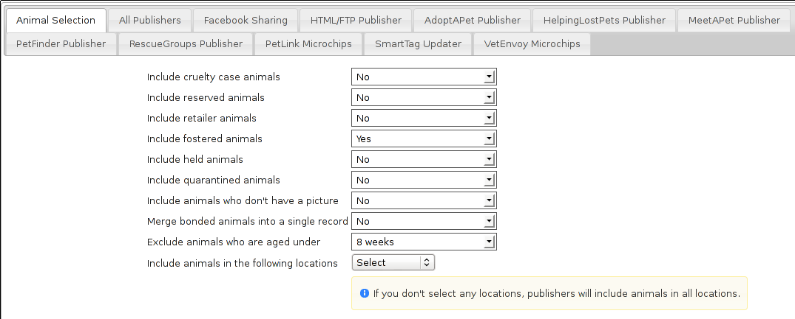
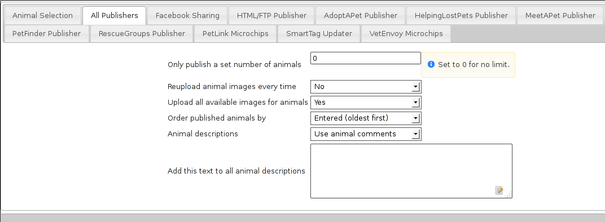
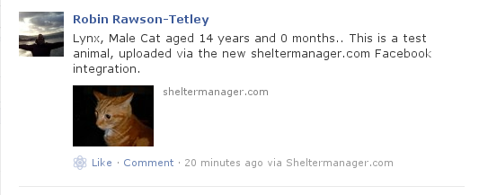
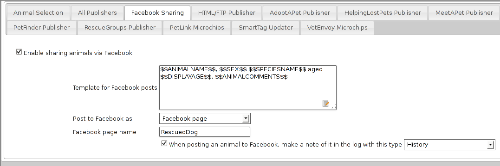

18 Internet Publishing
ASM can update many third party adoption sites and microchip registries as well as generating websites of your adoptable and recently adopted animals. The sites produced are based on simple editable templates and can be completely customised and branded to suit you.
All of this functionality is accessed via the top level Publishing menu.
There are many options you can set to choose what appears on the output, and how the output is generated. Set these options under Publishing->Set Publishing Options
18.1 Animal Selection

The Animal Selection tab allows you to control which animals are considered adoptable by ASM's internet publishers.
-
Include [category] animals: Select “yes” to include animals fitting the category.
-
Merge bonded animals into a single record: When outputting bonded animals, merge them into a single entry. The names will be joined together with commas, but other than that all the details will be of the first animal in the sort so make sure the bio/notes include information on the bonded animals for all of them.
-
Exclude animals aged under: This box is to prevent puppies and kittens who are too young being included in the list of available adoptions. You may choose an age limit on animals that appear. By default, the system excludes animals less than 1 year old (52 weeks).
-
Include animals in the following locations: Select the locations to include adoptable animals from. If none are selected, all locations will be used.
18.2 All Publisher Settings

The All Publishers tab allows you to set options common to all internet publishers.
-
Reupload animal images every time: Ticking this box will tell the publisher to reupload images for all the animals published. Normally, ASM will not upload an image it has previously uploaded to save bandwidth. If you've changed the web preferred image for an animal after a publish, you'll need to set this option to make sure the updated image is sent.
-
Upload all available images for animals: Ticking this box will have the publisher upload all the images for each animal where available. They will be named sheltercode-X.jpg (X increments for each image). The first image will be the image flagged as web preferred.
-
Order published animals by: Sorts the list of animals before they are published.
-
Animal descriptions: This determines the source of the main description for animals when being published. For the HTML/FTP publisher, this is the source of the $$WebMediaNotes$$ token. Set to “Use animal comments” to use the comments field from the notes section of the animal's record. “Use notes from preferred photo” will use the notes field on the animal's web preferred photo.
-
Add this text to all animal descriptions: Allows you to set a footer on every animal description before it is published.
18.3 Facebook

Unfortunately, this only works for sheltermanager.com customers as Facebook require a registered application, and applications have to belong to a fixed domain. This is so that other Facebook users can filter your posts by application.
You can publish an animal's photo and adoption details to Facebook by clicking the Facebook button on the main animal details toolbar. The details will be merged with the facebook template configured in publishing options and it will be posted to the timeline of the page you specified in the configuration at Publishing->Set Publishing Options.

The template allows you to specify the text that will be posted to Facebook, using the same wordkeys as the internet publisher.
You can choose to post to Facebook as yourself or as your page. If you choose page, you must complete the page name field.
The Facebook page name field should contain a portion of your Facebook page name as presented to the user (it's the main page title that appears at the top of the page). The reason for this is that Facebook users can administer multiple pages, so ASM needs to be able to find your page in the list available for your Facebook user. It only needs to be a portion of the page name that uniquely identifies it. For example, if your Facebook page name is “Humane Society of Georgia”, then you could just put the word “Humane” in there to help ASM find it.
If you want to post to the logged in Facebook user's wall, then leave the page name blank.
Finally, if you wish, you can have ASM write a log entry to the animal's record whenever you publish an animal to Facebook.
18.4 HTML/FTP Publisher
ASM can create websites for you using a simple templating system and optionally upload them to an FTP server. The pages themselves can be split down by species and age, or arranged numerically with a fixed number of animals per page. In addition, a recently adopted page can be generated along with an rss.xml for feed readers.
-
Generate javascript database: The site search facilities require a Javascript database, indexing the available animal records. If you wish to include search facilities, make sure this box is ticked.
-
Generate thumbnail images: The publisher will create thumbnails of all the animal images. Thumbnail images have the same name as the animal image, but are prefixed with tn_. You can use tn_$$WebMediaFilename$$ in a template to get the thumbnail image for the current animal.
-
Thumbnail size: The desired length in pixels of the longest side of the thumbnail.
-
Split pages with a baby/adult prefix: If this option is selected, ASM will output pages in the form baby/adultSPECIES.EXTENSION. Eg: babyCat.html and adultCat.html for cats/kittens. This option only works with the Split pages with a species name prefix option.
-
Split baby/adult age at: The split point to determine juvenile animals.
-
Split pages with a species name prefix: Output pages of the form SPECIES.EXTENSION, eg: Dog.html. This means you can reference the page of adoptable dogs only from your website.
-
Output an adopted animals page: If set to yes, a file named adopted.EXTENSION will be output that you can use to reference recently adopted animals.
-
Output a page with links to available online forms: If set to yes, a file named forms.EXTENSION will be output that contains a link to all the online forms in the database.
-
Output an rss.xml page: If set to yes, a file named rss.xml will be output for feed readers. It will use the rss template if it is available in your database, if it's not then it will be constructed from a default template built into the program.
-
Show animals adopted: If outputting an adopted animals page is on, how far back the adoptions should be included.
-
Page extension: The file EXTENSION to give a page. Eg: html
-
Publishing template: The template ASM should use to construct the header/footer/body elements of the pages. ASM comes with a set of included templates, outlined in the next section.
-
Animals per page: If you don't have split pages by species, ASM will output numbered pages, 1.EXTENSION, 2.EXTENSION, etc. Specify here how many animals you'd like before moving on to the next page. By default, the system shows 10, however the more animals you put on a page, the longer the page will take to load.
-
Scale published images to: Modern digital cameras can take very high quality images - so much so that they could take a very long time for users to download (particularly for people with modems). Also, if your shelter's connection to the internet is over a modem, it could take a long time for the site to upload. This box allows you to reduce the size of your images to scaled JPEGs with the resolutions specified. ASM scales down pictures when you attach them under the media tab, so unless you want to make them smaller still, it's best to leave this at No Scaling.
-
Publish to folder: Choose the folder where output is to be generated. Note that this folder is on the machine that ASM is installed on, not your local client PC. If this is left blank, a temporary folder will be used.
18.4.1 Included publishing/site templates
ASM comes with a number of site templates – plain, rss, littlebox and sm.com.
-
plain produces very simple HTML output - just the animal's picture and a few details in a list.
-
rss produces XML output for interpreting by an RSS feed reader.
-
sm.com is much more advanced, using CSS hover elements and javascript to do image substitution for icons and other tricks.
-
littlebox is also more advanced, using CSS overlays and popups.
-
responsive uses relative sizings to work equally well on mobile devices. It is not dissimilar to plain, but also features the ability to click an animal's photo for more information.
You can edit these templates under Publishing->Edit HTML Publishing Templates and add your own new ones if desired. Templates are made up of three sections.
-
The header block - this is output for each page before any animal records.
-
The footer block - this is output for each page after all the animal records.
-
The body block - this is output for each animal record and has keys to pull data from the database and the animal's image(s). The keys available are those available for animal documents (see wordkeys in the appendix at the end of this document) and are enclosed in $$ - eg: $$ShelterCode$$ will output the animal's shelter code.
A number of special keys are allowed in the header and footer blocks that pull information from other areas of the system. These are:
-
$$ORGNAME$$ - Becomes your organisation's name
-
$$ORGADDRESS$$ - Your organisation's address
-
$$ORGTEL$$ - Your organisation's telephone number (all of these org fields can be found under System->Options)
-
$$ORGEMAIL$$ - Your email address (this is taken from Settings->Options->Email)
-
$$USER$$ - Substitutes the current system user, including their real name
-
$$DATE$$ - The current date
-
$$TIME$$ - The current time
-
$$DATETIME$$ - The current date and time
-
$$VERSION$$ - The ASM version
-
$$NAV$$ - If you are using numbered pages, outputs navigation with the current page disabled and links to the other available pages.
-
$$TOTAL$$ - The number of animals output by the publisher
18.5 AdoptAPet.com
ASM can send data to 1-800-Save-A-Pet.com (now known as AdoptAPet.com) and upload your animals for adoption directly to your account with them.
You will need to go to the publishing options first and enter the user name given to you by AdoptAPet.com and your password. All you need to do then is choose Publish to AdoptAPet.com. The options for filtering animals are the same (see previous section for reference).
If you have mapped the colours and wish to include them, you will need to tick the “Include colors in column 9” checkbox on the AdoptAPet panel of the publishing options.
You can also have ASM stop sending the import.cfg file after the first export. This means you can then grab it from their FTP server and edit it yourself if you wish to change any mappings, then put it back again. This is generally only necessary for users who want to send colour information.
18.6 HelpingLostPets.com
ASM can send data to www.helpinglostpets.com, a map-based website that publishes adoptable and found animals. Your ASM found data will also be published as well as adoptable animals. You will need an organisation ID, FTP username and password and to enter the postal/zipcode of your shelter.
Helpinglostpets.com is global and can accept data from shelters in any country.
18.7 Meetapet.com
ASM can send adoptable animal information to www.meetapet.com, an adoption website. After signing up with them, you will need to get a secret and shelter key from them in order to send them data.
18.8 PetFinder.com
In addition to creating standalone websites with animals up for adoption, ASM can also integrate with PetFinder.com and upload your animals for adoption directly to your account with them.
You will need to go to Publishing->Set Publishing Options first and view the PetFinder panel. Here, you should enter the shelter Id given to you by PetFinder.com and your password. All you need to do then is choose Publish to PetFinder.com in place of the normal internet publisher. The options for filtering animals are the same (see previous section for reference).
Note that if you have created new Species or Breeds within ASM, you will need to map them to the available publisher options under the Breed and Species sections of Settings->Lookup Data.
If you have some that are not mapped, the publisher will fail with an error message.
The “Upload all available images” option will upload all animal photos to PetFinder instead of just the preferred.
PetFinder has some quirks in that they indicate an unknown crossbreed by having a blank secondary breed with the crossbreed flag set. Since ASM doesn't allow you to set an empty second breed field, there's a workaround - If you make the second breed the same as the first breed with the crossbreed flag set, ASM will send that second breed as a blank to PetFinder.
IMPORTANT: You have to let PetFinder know that you are using ASM to upload your data. Do this by going to the Admin System Help Center, then Contact Us and send PetFinder Tech Support a message that you are using ASM to publish animal data via their FTP server. They should give you the FTP login information and make sure permissions and quotas are correct.
18.9 PetRescue.com.au
In addition to creating standalone websites with animals up for adoption, ASM can also integrate with Petrescue.com.au and upload your animals for adoption directly to your account with them.
You will need to go to Publishing->Set Publishing Options first and view the PetRescue panel. Here, you should enter the shelter Id given to you by PetRescue.com.au and your password. All you need to do then is choose Publish to PetRescue.com.au in place of the normal internet publisher. The options for filtering animals are the same (see previous section for reference).
Note that if you have created new Species or Breeds within ASM, you will need to map them to the available publisher options under the Breed and Species sections of Settings->Lookup Data.
If you have some that are not mapped, the publisher will fail with an error message.
18.10 RescueGroups.org
ASM can integrate with RescueGroups.org. They run a pet adoption portal service that allows updating of multiple online services (including Facebook and Petsmart). See their website for information on which services they update. For more information on setting up RescueGroups to receive data from ASM, see their userguide at https://userguide.rescuegroups.org/ and search for ASM.
To configure ASM, you will need to go to Publish->Set Publishing Options and enter the FTP username and password given to you by RescueGroups (you can find this by going to Services->FTP account in the RescueGroups management interface).
Once you've done that, you can choose the Publish to RescueGroups.org menu item. The options for filtering animals are the same as for the other publishers.
Note: If you are using the “Upload all images” option, ASM will only send the first 4 images (the first is always the preferred) as RescueGroups.org do not support more than 4 images per animal.
Note: The RescueGroups.org publisher uses the publisher breeds and species mappings, so you should make sure that you have mappings for all your breeds and species before using the publisher (the publisher will give an error message if any species or breeds do not have mappings).
18.11 AVID/PETtrac UK
ASM can register animals with the AVID PETtrac database for shelters in the United Kingdom.
When you publish to PETtrac, ASM finds all animals with a PETtrac microchip (they are 15 digits and start with 977) that have been adopted and sends their information and new owner info to PETtrac to update their records. ASM tracks the date PETtrac was last updated, so if the animal is returned and adopted again, another update will be done automatically.
18.12 idENTICHIP/Anibase UK
ASM can register animals with the Anibase database for shelters in the United Kingdom.
When you publish to Anibase, ASM finds all animals with an idENTICHIP microchip (they are 15 digits and start with 9851 or 9861) that have been adopted and sends their information and new owner info to Anibase to update their records. ASM tracks the date Anibase was last updated, so if the animal is returned and adopted again, another update will be done automatically.
18.13 PetLink
ASM can register microchips with PetLink, a company that supply microchips to US shelters.
When you register animals with PetLink, ASM finds all animals with a PetLink microchip (their microchips are 15 digits and start with 98102) that have been adopted and sends their information and new owner info to PetLink to update their records. If an animal is returned and adopted out again later, ASM will automatically update PetLink again.
18.14 SmartTag PETID
ASM can register animals with SmartTag PETID, a company that supply collar tags to shelters for free in the US. Each tag has a unique number on it and if your locale is set to US and you have SmartTag PETID Settings in your database, you can enter the tag information in fields on the animal health and identification section.
When you register animals with SmartTag, ASM finds all animals with a SmartTag that have been adopted and sends their information (along with owner info and a picture) to SmartTag so they can be identified in the event they are lost. If an animal is returned and adopted out again later, ASM will register the tag again to the new owner.
18.15 VetEnvoy US (HomeAgain and AKC Reunite)
ASM can also use the VetEnvoy service in the US to register microchips with HomeAgain and AKC Reunite.
ASM will find all HomeAgain microchips (15 digits starting with 985) and AKC Reunite microchips (15 digits starting with 956) that have been adopted and will register the animal and new owner information. As with the other microchip providers, ASM will register the chip again if the animal is returned and adopted to a new owner.